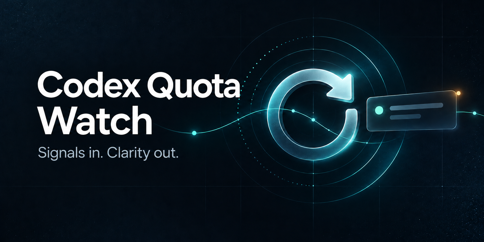

Source ZIP
Python CLI、Windows 窗口与示例；运行前需单独安装。
下载程序包
本地 Python CLI 处理 JSON 或用户配置的来源；Skill 在宿主提供 browser 工具时，可读取 X 上的 Tibo 主页与本人回复。
Python CLI、Windows 窗口与示例；运行前需单独安装。
下载程序包含 Codex 指令与只读 DOM 脚本；需宿主 browser 工具，不含 Python CLI。
下载 Codex Skill首次读取 Tibo：装好后在新 Codex 回合输入 $codex-quota-watch，再说“启用 Tibo 每3小时监测”。支持 browser 工具时，Skill 默认读取 X 主页与本人 Replies；首次需要登录时请你直接在浏览器登录。成功读取真实内容后才建立基线并安排检查。
程序从静默基线开始，之后按帖子和阶段去重。每一条提醒留在待确认列表，直到你亲自执行确认。
先对重置公告提醒一次；出现明确的完成措辞后，再对完成状态提醒一次。
SQLite 保存去重与待确认状态。Windows 可选择显示本地窗口收据。
时间分类包含明确、估计、未知。没有依据时显示未知，不把推测写成事实。
Source ZIP 用于运行 CLI；Skill ZIP 只教 Codex 如何协助设置。需要两者时分别安装。
安装 Skill 后新开 Codex 回合，调用 $codex-quota-watch。未识别时重启 Codex。
说“启用 Tibo 每3小时监测”。Skill 优先使用宿主 browser 工具和现有浏览器会话。
真实帖子读取成功后静默建立基线，再安排检查；空正文、登录失效时不会声称已启用。
浏览器读取依赖宿主 browser 工具和 Skill ZIP 内的只读 DOM 脚本 scripts/extract-posts.js；它不是 pip 库内置的抓取器或云服务。CLI 本身仍只接受 JSON 或用户配置的数据源命令。若宿主没有 browser 工具，请自行提供真实来源；没有来源就保持待配置。浏览器来源操作与故障排查。
默认 Windows Skill 路径：$HOME\.codex\skills\codex-quota-watch\SKILL.md；自定义 CODEX_HOME 时为 $env:CODEX_HOME\skills\codex-quota-watch\SKILL.md。Skill ZIP 解压后含 codex-quota-watch/SKILL.md、references/browser-source.md 和 scripts/extract-posts.js 三个文件，直接解压到 skills 根目录即可。完整解压命令见安装指南。
python -m pip install .
codex-quota-watch --state-dir .\state init
codex-quota-watch --state-dir .\state poll --input .\examples\baseline.json --dry-run
codex-quota-watch --state-dir .\state status
codex-quota-watch --state-dir .\state ack <提醒ID>项目内的帖子文件是合成样例，不是当前公告，也不包含真实用户数据。包本身不安装 X/Twitter 登录或凭证。
allowlist 目前为 thsottiaux。采集命令和账号状态由运行者维护。
分类偏保守，但讽刺、引用、否定和复杂语境仍可能带来误判。
没有可验证的 Codex 宿主切换接口，因此不会自动换模型。宠物或动画提示属于尽力而为，不保证送达。